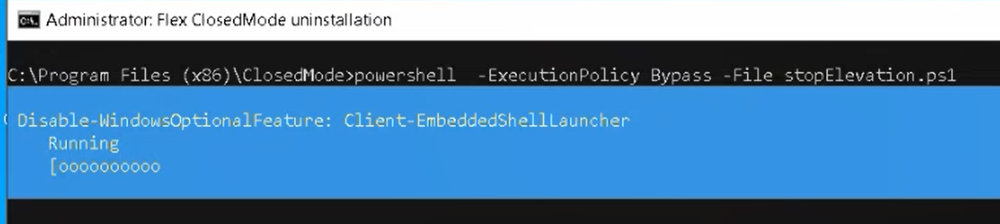

Troubleshooting Flex Client Issues
Error 102 Connection Refused
When starting Flex desktop app, the following error displays: ERR_CONNECTION_REFUSED (Code = 102)
This means that the endpoint.json is missing. Do the following:
- In the Connection error page, click Configure endpoint.
- The Endpoint address page displays.
- In SMC, under Websites, select the Flex Client project.
- In the Web Applications Details of the Management tab, click Copy URL.
- Press Ctrl+V to paste the copied address to the Address field in the Endpoint address page.
- Click Save.
- The Desigo CC Flex desktop app logon page displays on the screen.
Error 400 Bad Request
When starting Flex desktop app, the following error displays: Error 400 Bad Request
This might mean, for example, that:
- The Flex client service is not available because the WSI fails to start. Wait until the connection is re-established.
- The address in the endpoint.json file is invalid. Do the following:
- Open Windows Task Manager and stop Flex desktop app.
- Go to C:\ProgramData\Siemens-Gms-FlexClient, open the endpoint.json file, set a valid address, and save the changes.
- Restart Flex desktop app.
Edit Endpoint Address
If for any reason you need to modify the endpoint address, do the following:
- Display the Endpoint address page in one of the following ways:
- Press CTRL+ALT+SHIFT+E.
- In the Flex desktop app window, select , and then choose Advanced > Edit endpoint address.
- The Endpoint address page displays.
- Enter a valid address and select Save.
NOTE: This action is not available for Flex closed mode.
Delete Security Settings
If for any reason you want to allow the possibility to select a client certificate different from the stored one you must first delete the certificate settings as follows:
- In the Flex desktop app window, select , and then choose Advanced > Security Settings.
- The client-identification.json is deleted in C:\ProgramData\Siemens-Gms-FlexClient.
Do a Hard Refresh
To manually refresh Flex web/desktop app including cache, proceed as follows:
- In Flex web app, clear browser cache.
- In the Flex desktop app window, select , and then choose Advanced > Empty cache and refresh.
Closed Mode Installation Fails With Error
When trying to set up a closed mode Flex station, the installation fails with the following error:Cannot be loaded because running scripts is disabled on this system
Do the following:
- Run Windows PowerShell as Administrator.
- Enter the command: powershell Set-ExecutionPolicy Unrestricted.
- Press ENTER.
- Run again the executable file Siemens-Gms-FlexClient-Closed-Mode-Installer.exe.
Uninstall Kiosk Mode
If for any reason you need to uninstall Flex closed mode, see the following steps.
- You have administrative privileges on the computer where Flex desktop app runs. You want to log on with the Administrator account to access the operating system. For example, for troubleshooting, checking log traces, manually restarting some services, or handling apps.
- Switch Windows user:
- On the keyboard, press Ctrl-Alt-Del.
- Select the Administrator user and provide the password.
- Note that you may have to change the language setting to correctly enter the password.
- You are logged on to the Flex desktop app with administrator’s credentials.
NOTE: In case of user’s inactivity, the system automatically starts Flex desktop app. - Open Task Manager, and disconnect the kioskuser.
- From Windows Start, select Flex ClosedMode uninstallation.
- An elevated command prompt window opens, in which a script runs to uninstall kiosk setup.

- When uninstall completes, click Close.
- If required, you can now proceed to uninstall Flex desktop app.

By manually removing the provisioning package or the Kiosk user you could still log on to Flex closed mode, but this results in a fatal system error .
Uninstall Flex Desktop App
- You have administrative privileges on the computer where Flex desktop app runs.
- Flex closed mode has been uninstalled from a computer that runs Flex desktop app.
- Open Windows Apps.
- From the list of apps found, select Flex Client, click Uninstall, and then follow the instructions in the Uninstall wizard.
- To clear the computer completely from any Flex client application files, also delete the Siemens-Gms-FlexClient folders from:
- C:\Program Files
- C:\ProgramData
Content with Long URL Not Displaying
Any selection on the Flex client that generates a URL longer than 260 characters may not display in the Flex client due to IIS and Web API character limitations. This can cause links to graphics or trends, for example, to fail, preventing the associated content from being displayed.
Note that some language files may count the characters differently. For example: 14 Chinese (zh_TW or zh_CN) characters are equivalent to 260 characters.
Resolution:
In order to display content from URL links longer than 260 characters, you must manually increase the accepted number of characters in the following:
- Register entry: HKEY_LOCAL_MACHINE\System|CurrentControlSet\Services\HTTP\Parameters
- Registry key: UrlSegmentMaxLength – The valid value range for the key is: 0 – 32,766